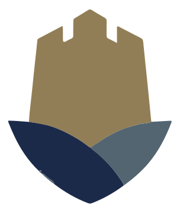
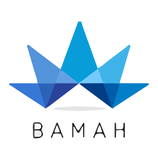
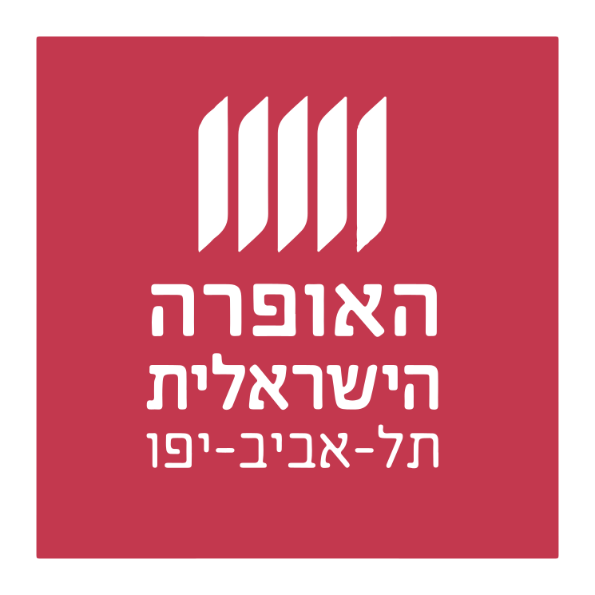
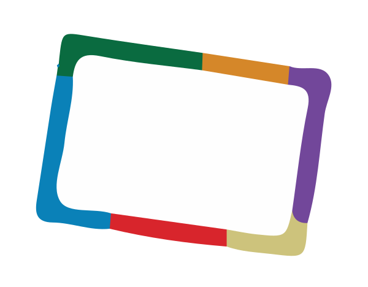
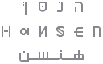
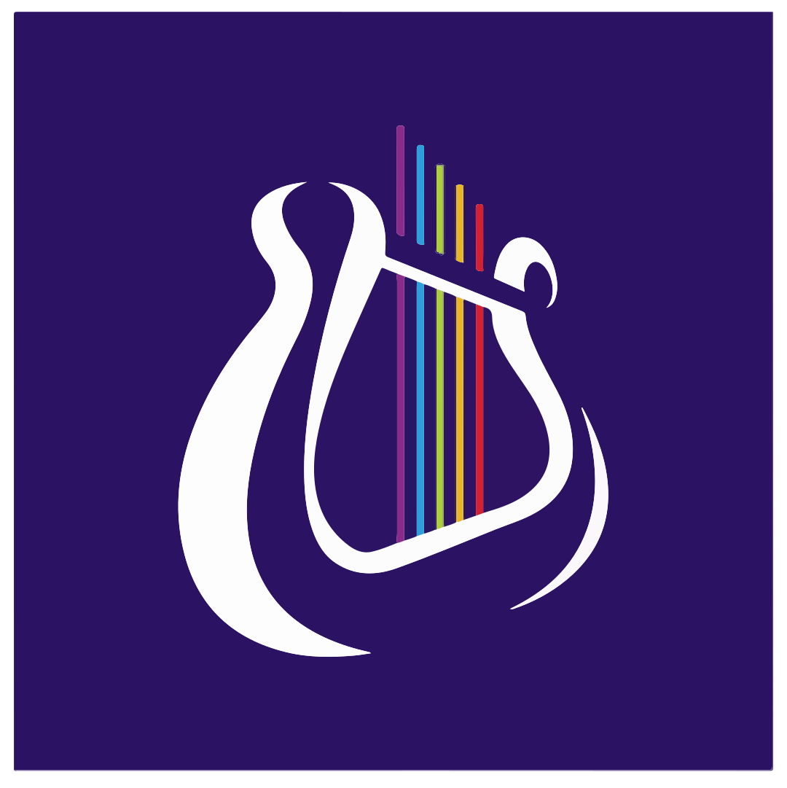
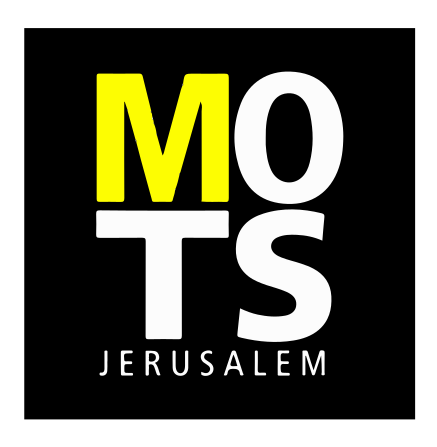

| # | Logo | Name | Location | Description | Website |
|---|---|---|---|---|---|
 |
The Jerusalem Foundation | Jerusalem | A philanthropic foundation that supports a wide range of cultural and social projects in Jerusalem. | https://www.jerusalemfoundation.org/ | |
| The America-Israel Cultural Foundation | New York | A philanthropic foundation that supports a wide range of cultural and social projects in Israel. | https://www.aicf.org/ | ||
| Israel Museum | Jerusalem | Israel's largest cultural institution and one of the world’s leading art and archaeology museums. | https://www.imj.org.il/ | ||
| Bezalel Academy of Arts and Design | Jerusalem | Israel's national school of art, established in 1906. | https://www.bezalel.ac.il/ | ||
 |
BAMAH | Tel Aviv | Harnessing culture from Israel to connect and inspire people. | https://www.bamaharts.org/ | |
| Artis | Tel Aviv | Supports Israeli contemporary artists through grants and programs. | https://www.artis.art/ | ||
| Anatta | Jerusalem | Runs various cultural projects throughout Israel. | https://anatta.org.il/ | ||
| Tel Aviv Museum of Art | Tel Aviv | A leading art museum in Israel, showcasing a wide range of Israeli and international art. | https://www.tamuseum.org.il/ | ||
| Jerusalem Theatre | Jerusalem | A major performing arts center in Jerusalem, hosting a variety of plays, concerts, and events. | https://www.jerusalem-theatre.co.il/ | ||
| Gesher Theatre | Tel Aviv | A bilingual theater company in Israel, performing plays in both Hebrew and Russian. | https://www.gesher-theatre.co.il/ | ||
 |
The Israeli Opera | Tel Aviv | Israel's leading opera company, performing a wide range of classical and contemporary operas. | https://www.israel-opera.co.il/ | |
 |
Haifa Museum of Art | Haifa | A major art museum in Haifa, showcasing a wide range of Israeli and international art. | https://www.hms.org.il/ | |
| Jerusalem Cinematheque | Jerusalem | A film archive and cinema in Jerusalem, showcasing a wide range of Israeli and international films. | https://jer-cin.org.il/ | ||
 |
Hansen House | Jerusalem | A cultural center in Jerusalem, hosting a variety of exhibitions, events, and workshops. | https://hansen.co.il/ | |
| Jerusalem Season of Culture | Jerusalem | An annual arts festival in Jerusalem, showcasing a wide range of Israeli and international artists. | https://jlmseason.com/ | ||
| The Israel Festival | Jerusalem | An annual international arts festival in Jerusalem, showcasing a wide range of performing arts. | https://www.israel-festival.org/ | ||
 |
The Jerusalem Academy of Music and Dance | Jerusalem | A leading music and dance academy in Israel, offering a wide range of programs. | https://en.jamd.ac.il/ | |
| The Eretz Israel Museum | Tel Aviv | A museum of history and archaeology in Tel Aviv, showcasing a wide range of artifacts from Israel's past. | https://www.eretzisraelmuseum.org.il/ | ||
| The Design Museum Holon | Holon | A museum of design in Holon, showcasing a wide range of Israeli and international design. | https://www.dmh.org.il/ | ||
| The Israel National Library | Jerusalem | The national library of Israel, housing a vast collection of books, manuscripts, and other materials. | https://www.nli.org.il/ | ||
| The Tower of David Museum | Jerusalem | A museum of the history of Jerusalem, located in the Tower of David citadel. | https://www.tod.org.il/ | ||
| The Bible Lands Museum Jerusalem | Jerusalem | A museum of the history and culture of the ancient Near East, located in Jerusalem. | https://www.blmj.org/ | ||
 |
The Museum on the Seam | Jerusalem | A museum of contemporary art in Jerusalem, focusing on social and political issues. | https://www.mots.org.il/ | |
| The Israel Cartoon Museum | Holon | A museum of cartoons and comics in Holon, showcasing a wide range of Israeli and international cartoons. | https://www.cartoon.org.il/ | ||
| Suzanne Dellal Centre for Dance and Theatre | Tel Aviv | A major center for contemporary dance and theater in Israel. | https://suzannedellal.org.il/ |
No results found.